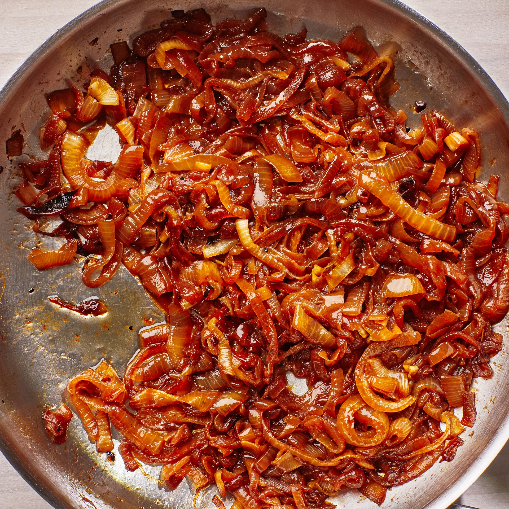

Caramelized Onions

Description
Caramelized onions are made by very slowly cooking onions so that they
become meltingly soft, deeply browned throughout, and wonderfully sweet.
Ingredients
- 2 large yellow onions, peeled (about 1 pound)
- 2 tablespoons unsalted butter
- Kosher salt
- Low-sodium chicken broth or water (for pan; optional)
Steps
-
Halve both onions through root end. Using the tip of your knife, cut a
V-shaped notch around root to remove it (this will ensure that all
slices separate when you cut the onion).
-
Place 1 onion half on your cutting board so root end is facing you, then
thinly slice onion lengthwise, starting at one side and working all the
way to the other (so your knife runs through the root halfway through,
not starting or ending at the root end). You’re going for slices that
are ¼"–⅛" thick.
-
Repeat same slicing procedure for remaining onion halves. It’s a lot of
onion! But it will cook down quite a bit, so it’s best to start with a
large quantity.
-
Heat 2 Tbsp. butter in a large saucepan over medium until melted and
sizzling. You can use a skillet to cook the onions, but a pan with high
sides will keep the onions from flipping out onto your stove. Using a
pan that also has a wide base gives water room to evaporate, allowing
the onions to caramelize rather than steam.
-
Instead of dumping in all of the onions at once, which would fill the
pot and make it hard to stir (which would then cause the ones on the
bottom to cook faster), start by adding just a couple of large handfuls
to the pot. Cook, stirring, until onions are soft and starting to turn
translucent, 1–2 minutes. Stir in a few more handfuls of onion and
repeat cooking and stirring process until you’ve added all the onions.
Season with a pinch of salt.
-
Reduce heat to medium-low and continue to cook onions, stirring every
few minutes to prevent them from sticking and coloring too much in any
one place, until blonde-colored, 15–20 minutes. This is the point of
doneness for French onion soup! If you feel like onions are getting too
brown around the edges or they’re sticking, reduce your heat a bit.
-
If you’re going for onions that are both softer and more caramelized
(say for a patty melt or onion dip), keep cooking, stirring on the
regular, until onions are unmistakably golden brown, another 15–20
minutes. Because most of the water has cooked off at this point, there
might be some bare spots where the pot could start to burn. If this
happens, stir in a splash of broth or water. The liquid will dissolve
the cooked-on bits, which the onions will re-absorb.
-
For extra-dark onions, the kind that make a great burger topping, cook
until they start to almost blacken around the edges and go slightly
crisp, another 10–15 minutes. This requires constant attention so they
don’t burn. No one said caramelized onions were quick!
-
Let onions cool in the saucepan, then use or transfer to an airtight
container and chill. They will keep up to 1 week.
Source:
Bon Appetit